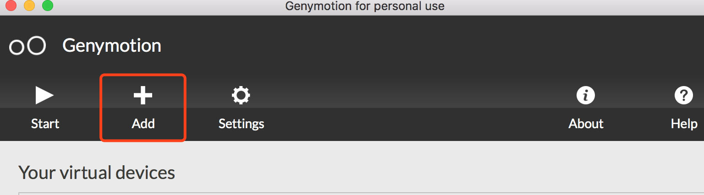
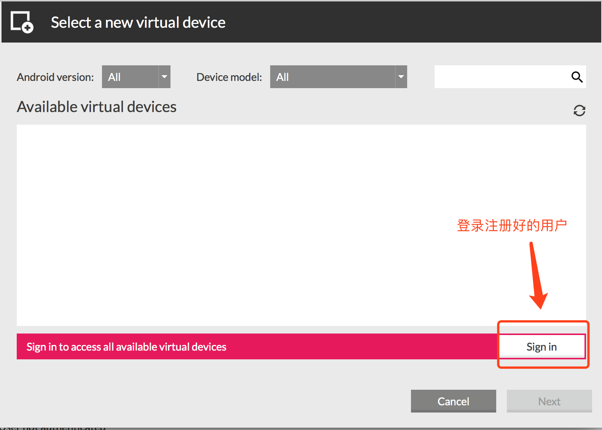
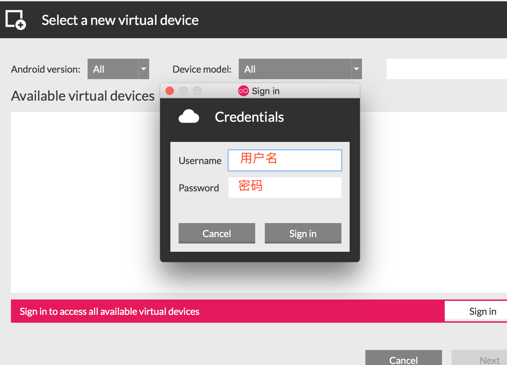

1.3.android虚拟机的安装
1.3.1 模拟器Genymotion安装
1.执行genymotion-2.11.0-vbox.exe(是一个集合程序，包含genymotion和virtualbox) -> 不需要更改配置，直接下一步默认安装 2.安装完genymotion继续等待，会提示安装virtualbox，继续安装，期间会提示安装oracle插件，全部允许安装 3.安装完成后会在桌面展示genymotion和virtualbox两个图标
1.3.2 虚拟机镜像导入
1.打开virtualbox 2.进入virtualbox -> 管理 -> 导入虚拟电脑 3.点击文件选择(Samsung Galaxy S6 - 5.1.0 - API 22 - 1440x2560.ova) -> 点击下一步 4.勾选 重新初始化所有网卡的MAC地址 5.点击导入按钮 -> 等待倒入完成 6.virtualbox列表会展示如下图圈出的选项
1.3.3 启动android模拟器
1.点击genymotion图标 -> 弹出框点击 >Personal Use
2.勾选复选框 -> 点击Accept -> 点击跳转页面的Close按钮
3.genymotion主界面点机start按钮
4.虚拟机启动成功
1.3.4虚拟机提供安装apk功能
1.安装genymotion ARM插件，此插件可提供x86运行环境，即可运行apk ⚠️ 需要下载对应版本的插件(本次使用android 5.1版本插件) 2.1.拖动ARM_Translation_Lollipop_20160402.zip到已启动的android虚拟机上 2.2.点击提示的ok按钮，见下图
5.3.再次点击提示的ok按钮，见下图，重启模拟器即可以安装apk文件
1.3.5 下载其他版本模拟器
1.需要注册一个genymotion账号，官网：https://www.genymotion.com
2.进入genymotion，点击Add按钮

3.点击Sign in，输入注册的genymotion用户名和密码
 
4.选择下载需要版本的模拟器


5.等待下载完成(下载时间根据网络)